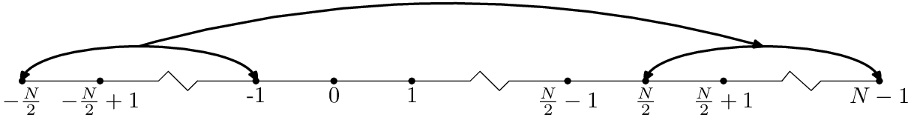

Consider the calculation of the following integral:
|
| (118) |
Divide the interval [a,b] into M uniform sub-intervals and deï¬ne
|
| (119) |
Then the integration in Eq. (118) can be approximated as
|
| (120) |
Deï¬ne ωm = 2πm∕(MΔ) with integer m and −M∕2 < m < M∕2. Consider the calculation of I(ωm). Using Eq. (120), we obtain
Equation (122) indicates the value of the integration I(ωm) can be obtained by calculating the discrete Fourier transformation of hj. However, as discussed in Ref. [2], equation (122) is not recommended for practical use because the oscillatory nature of the integral will make Eq. (122) become systematically inaccurate as ω increases. Next, consider a new method, in which h(t) is expanded as|
| (123) |
Apply the integral operator∫ abdtexp(iωt) to both sides of Eq. (123), we obtain
 | (124) |
Make the change of variables s = (t−tj)âˆ•Δ in the ï¬rst integral and s = (t−a)âˆ•Δ in the second integral, the above equation is written as
 | (125) |
Deï¬ne 𜃠= ωΔ and make use of tj = a + jΔ, the above equation is written as
 | (126) |
Deï¬ne
 | (127) |
|
| (128) |
Then Eq. (126) is written as
 | (129) |
Â
Â
Â
Â
Â

Â